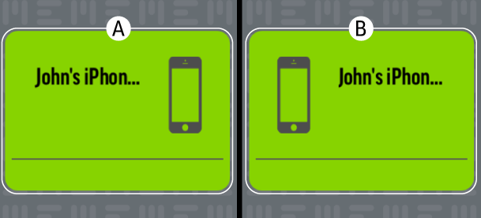
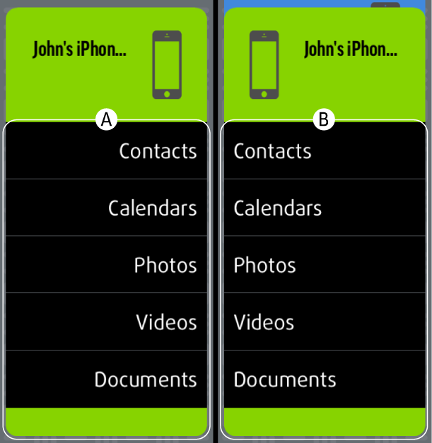

Sauvegarde et restauration manuelle de l'appareil
1. Sauvegarde de l'appareil
Faites glisser l'icône (A) sur l'icône (B) à droite.
2. Restauration de l'appareil
Faites glisser l'icône (B) sur l'icône (A) à gauche.

3. Sauvegarde par catégorie
Pour sauvegarder une catégorie individuelle, faites glisser son icône de (A) à (B) (de gauche à droite).

4. Restauration par catégorie
Pour restaurer une catégorie individuelle, faites glisser son icône de (B) à (A) (de droite à gauche).